Dental ML Project
YOLOv11 object detection on dental imagery — Roboflow fine-tuning & inference
- Two fine-tuned detection models
- Roboflow Inference SDK
- Serverless + local backends
- Supervision visualization
Object detection on dental imagery using models trained and fine-tuned in Roboflow. This project
documents two YOLOv11 fine-tuned tracks (tooth and panoramic X-ray), training metrics from the
Roboflow dashboard, and a runnable CLI for inference via HTTP serverless API or local
inference weights.
Source on GitHub.
A planned comparison with a locally trained Faster R-CNN baseline is listed as future work.
Naming note: Folders coco and yolo in assets refer to the
tooth and pano training tracks in this repo — both models are
YOLOv11 on Roboflow, not COCO-format vs raw YOLO dataset formats.
Models at a glance
| Track | Roboflow name | Model ID | mAP@50 | Precision | Recall | F1 |
|---|---|---|---|---|---|---|
Tooth (coco) |
tooth 1 | tooth-bqo56-ez1w4/1 |
87.7% | 89.3% | 80.4% | 84.6% |
Pano (yolo) |
pano 1 | pano-fcjgf-nn0ku/1 |
70.3% | 72.1% | 68.4% | 70.2% |
Both models use YOLOv11 Object Detection (Accurate) in Roboflow (license AGPL-3.0). Pano model on Roboflow Universe · github.com/Harish-nika/Dental_ML_project.
Tooth track — classes & labels (coco)
| Class | Annotations |
|---|---|
| Cavity | 641 |
| Fillings | 6,097 |
| Impacted Tooth | 498 |
| Implant | 2,047 |
Pano track — classes & labels (yolo)
14 panoramic classes; largest label counts include Filling (55,964), impacted tooth (32,520), Root Canal Treatment (25,108), Crown (14,476), and Caries (13,316).
| Class | Annotations |
|---|---|
| Filling | 55,964 |
| impacted tooth | 32,520 |
| Root Canal Treatment | 25,108 |
| Crown | 14,476 |
| Caries | 13,316 |
| Periapical lesion | 8,104 |
| Missing teeth | 5,108 |
| Root Piece | 4,100 |
| Implant | 2,736 |
Technical highlights
- End-to-end Roboflow workflow: Dataset annotation, fine-tuning, and deployment IDs for private inference.
- Dual inference backends:
inference-sdkHTTP client against serverless Roboflow, or localget_modelfrom theinferencepackage. - Visualization pipeline: Predictions converted via Supervision
Detections.from_inference, boxed and labeled, saved underoutputs/. - Tooth classes: Cavity, Fillings, Impacted Tooth, Implant — per-class validation mAP@50 up to 97% (Implant).
- Pano classes: 14 panoramic labels (Caries, Filling, Crown, RCT, canals, sinuses, etc.) — UI example highlights Caries/Filling at 40% confidence.
- Future work: Local Faster R-CNN training and side-by-side evaluation vs these YOLOv11 models.
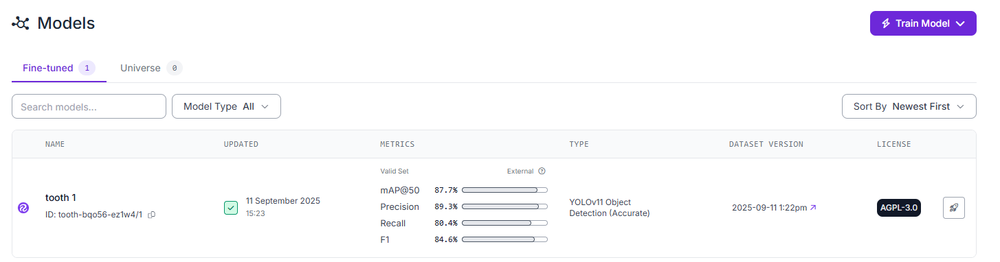
Tooth model — Roboflow fine-tuned summary (tooth 1)
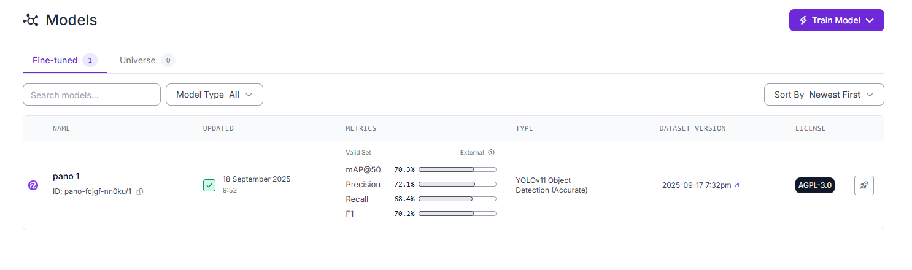
Pano model — Roboflow fine-tuned summary (pano 1)
Tooth detection model (coco track)
Model ID tooth-bqo56-ez1w4/1. Four classes with 9k+ Roboflow labels. Per-class mAP@50 on the validation set:
Cavity 71%, Fillings 92%, Impacted Tooth 90%, Implant 97%; overall mAP ~88%.
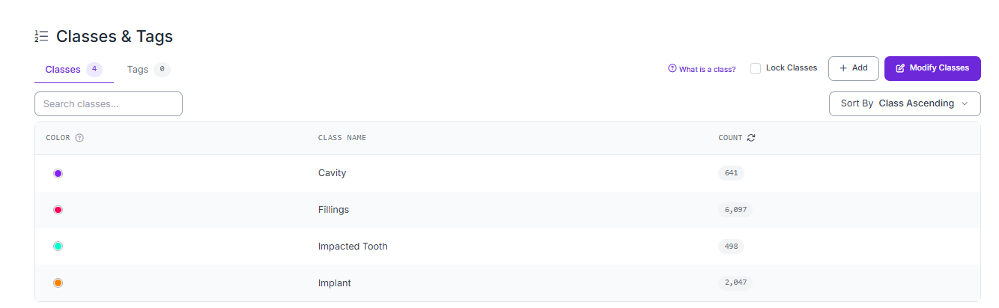
Tooth classes & tags — Cavity, Fillings, Impacted Tooth, Implant
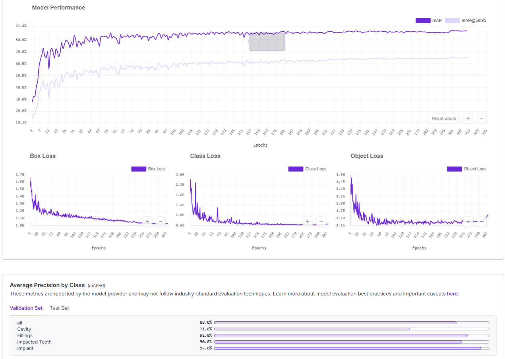
mAP, loss curves, and average precision by class over training
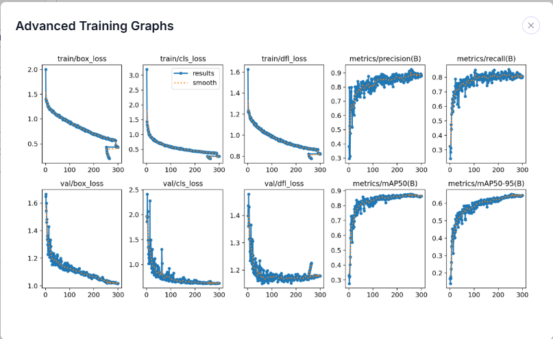
Extended training metrics
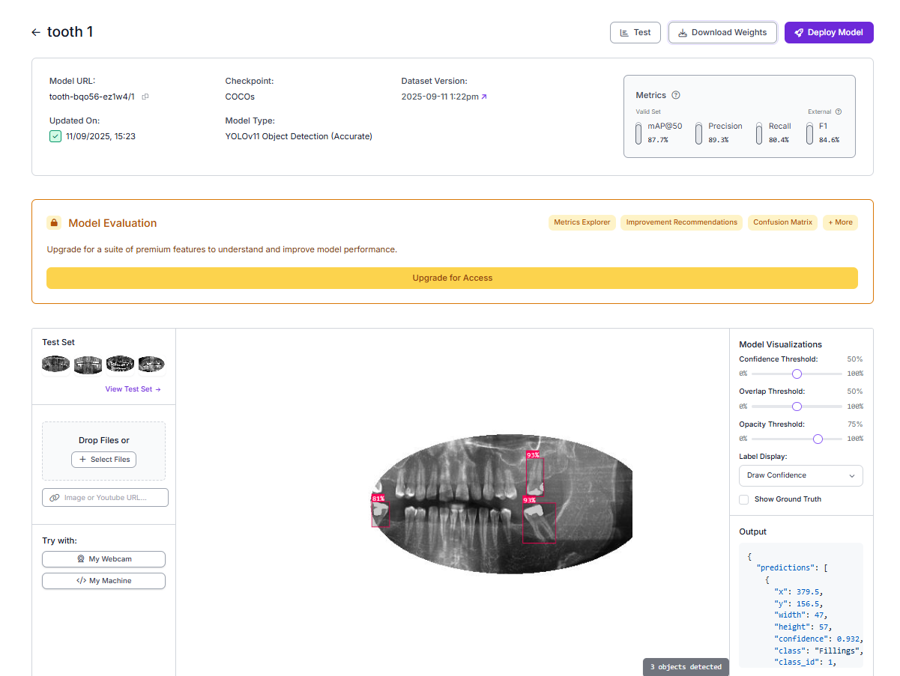
Fine-tuning configuration
Panoramic X-ray model (yolo track)
Model ID pano-fcjgf-nn0ku/1. Fourteen panoramic classes (Caries, Filling, Crown, Root Canal Treatment,
impacted tooth, Implant, Mandibular Canal, maxillary sinus, Missing teeth, Periapical lesion, and more).
Example UI inference below highlights Caries and Filling at 40% confidence.
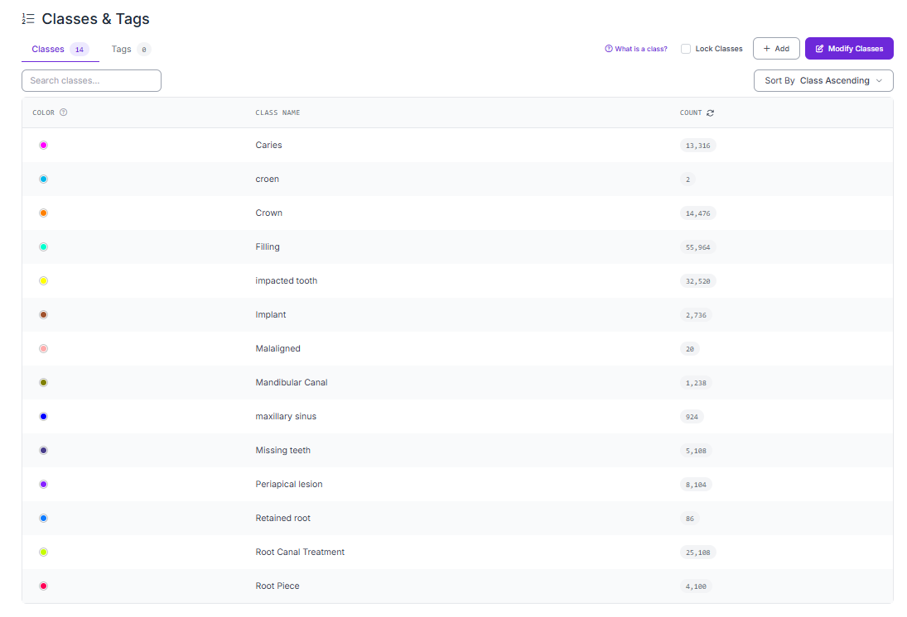
Pano classes & tags — 14 classes and annotation volumes
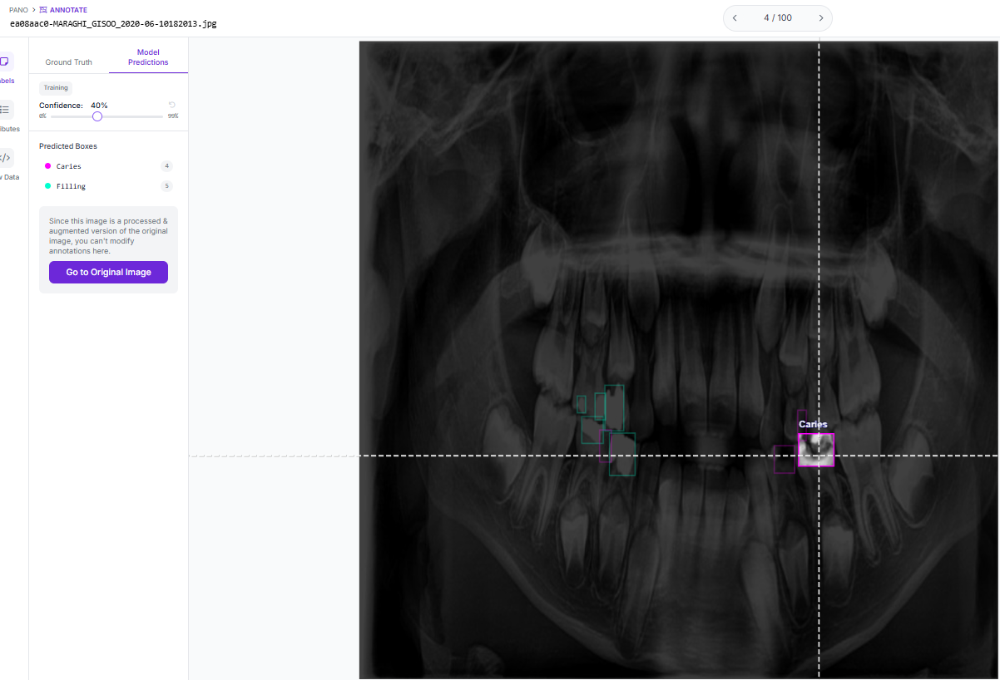
Example predictions on a panoramic X-ray (Caries, Filling)
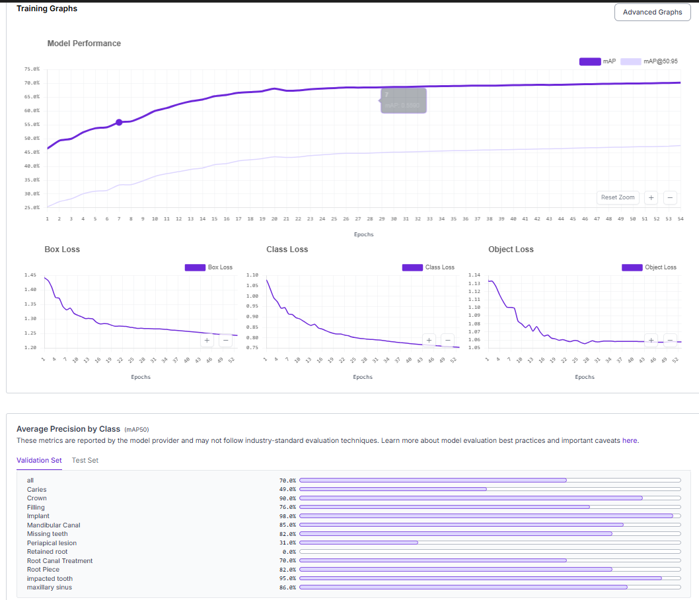
Training mAP and loss curves
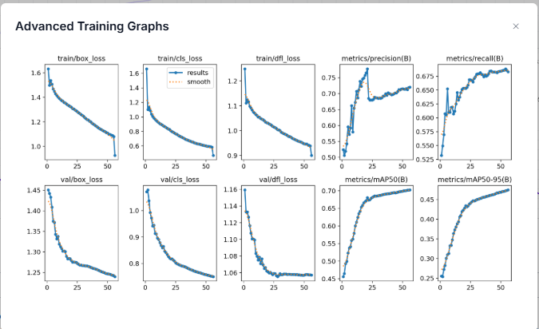
Extended training metrics
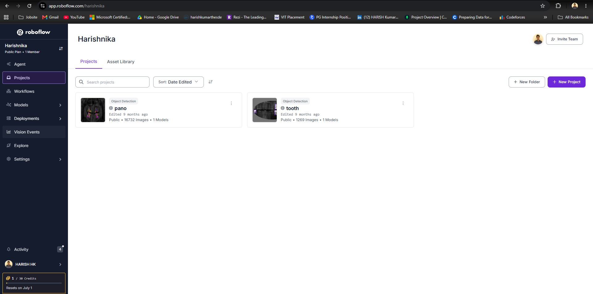
Annotated dataset preview
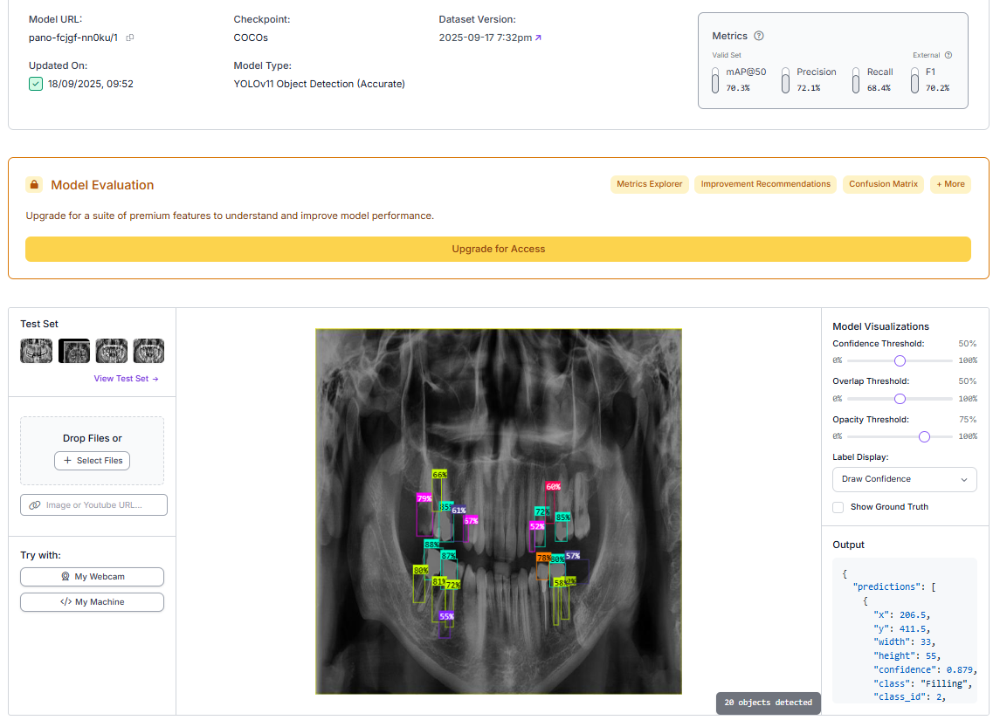
Fine-tuning configuration
Project structure
Dental_ML_project/ ├── app.py # CLI entry point ├── requirements.txt ├── src/ │ ├── config.py # Model IDs and API key helpers │ ├── annotate.py # Load image, annotate, save │ ├── inference_http.py # Serverless HTTP inference │ └── inference_local.py # Local inference (get_model) ├── assets/ │ ├── coco/ # Tooth model screenshots │ └── yolo/ # Pano model screenshots └── outputs/ # Annotated images (runtime)
Install
git clone https://github.com/Harish-nika/Dental_ML_project.git cd Dental_ML_project python -m venv .venv source .venv/bin/activate # Windows: .venv\Scripts\activate pip install -r requirements.txt
Optional GPU: pip install --extra-index-url https://download.pytorch.org/whl/cu124 inference-gpu
— see Roboflow install docs.
Run inference
Set your API key from Roboflow dashboard → Deploy:
export ROBOFLOW_API_KEY=<your_api_key> # or: cp .env.example .env
HTTP / serverless (default) — InferenceHTTPClient:
python app.py --model tooth --image path/to/tooth_image.jpg python app.py --model pano --image path/to/pano_image.jpg python app.py --model pano --image https://example.com/xray.jpg --output outputs/result.png python app.py --model pano --image xray.jpg --display
Local weights — get_model:
python app.py --model pano --image path/to/pano_image.jpg --backend local python app.py --model tooth --image path/to/tooth_image.jpg --backend local
Annotated images save under outputs/ by default (e.g. outputs/tooth_annotated.png).
For a self-hosted Inference Server, use api_url=http://localhost:9001 in src/config.py.